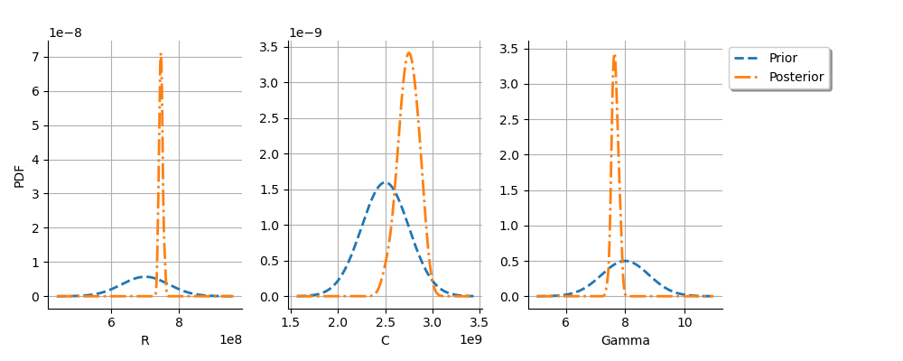
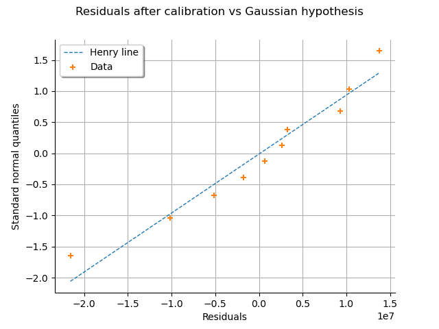
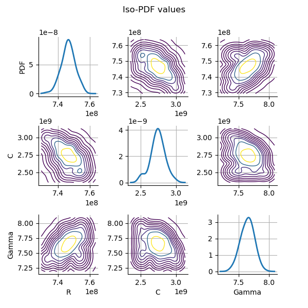

Note
Go to the end to download the full example code
Calibration of the Chaboche mechanical model¶
In this example we present calibration methods on the Chaboche model. A detailed explanation of this mechanical law is presented here. As we are going to see, this model is relatively simple to calibrate: its parameters are identifiable and the output is relatively sensitive to the variation of the parameters. Hence, all methods perform correctly in this case.
In this example, we use both least squares methods and Bayesian Gaussian methods. Please read Code calibration for more details on code calibration and least squares and read Gaussian calibration for more details on Gaussian calibration.
Parameters to calibrate and observations¶
The vector of parameters to calibrate is:

We consider a data set where the number of observations is equal to:

The observations are the pairs  ,
i.e. each observation is a couple made of the strain and the corresponding stress.
,
i.e. each observation is a couple made of the strain and the corresponding stress.
In the particular situation where we want to calibrate this model, the following list presents which variables are observed input variables, input calibrated variables and observed output variables.
 : Input. Observed.
: Input. Observed. ,
,  ,
,  : Inputs. Calibrated.
: Inputs. Calibrated. : Output. Observed.
: Output. Observed.
import openturns as ot
import openturns.viewer as otv
from matplotlib import pylab as plt
from openturns.usecases import chaboche_model
ot.Log.Show(ot.Log.NONE)
Define the observations¶
In practice, we generally use a data set which has been obtained from
measurements.
This data set can be loaded using e.g. ImportFromCSVFile().
Here we import the data from the
ChabocheModel
class.
cm = chaboche_model.ChabocheModel()
print(cm.data)
observedStrain = cm.data[:, 0]
observedStress = cm.data[:, 1]
nbobs = cm.data.getSize()
[ Strain Stress (Pa) ]
0 : [ 0 7.56e+08 ]
1 : [ 0.0077 7.57e+08 ]
2 : [ 0.0155 7.85e+08 ]
3 : [ 0.0233 8.19e+08 ]
4 : [ 0.0311 8.01e+08 ]
5 : [ 0.0388 8.42e+08 ]
6 : [ 0.0466 8.49e+08 ]
7 : [ 0.0544 8.79e+08 ]
8 : [ 0.0622 8.85e+08 ]
9 : [ 0.07 8.96e+08 ]
Print the Chaboche model
print("Inputs:", cm.model.getInputDescription())
print("Outputs:", cm.model.getOutputDescription())
Inputs: [Strain,R,C,Gamma]
Outputs: [Sigma]
We see that there are four inputs: Strain, R, C and Gamma and one output: Sigma. The Strain is observed on input and the stress Sigma is observed on output. Using these observations, we want to estimate the parameters R, C and Gamma.
Set the calibration parameters¶
In this part, we begin the calibration study.
Define the value of the reference values of the  parameter.
In the Bayesian framework, this is called the mean of the prior Gaussian
distribution. In the data assimilation framework, this is called the background.
parameter.
In the Bayesian framework, this is called the mean of the prior Gaussian
distribution. In the data assimilation framework, this is called the background.
R = 700e6 # Exact : 750e6
C = 2500e6 # Exact : 2750e6
Gamma = 8.0 # Exact : 10
thetaPrior = [R, C, Gamma]
In the physical model, the inputs and parameters are ordered as presented in the next table. Notice that there are no parameters in the physical model.
Index |
Input variable |
|---|---|
0 |
Strain |
1 |
R |
2 |
C |
3 |
Gamma |
Index |
Parameter |
|---|---|
∅ |
∅ |
Table 1. Indices and names of the inputs and parameters of the physical model.
print("Physical Model Inputs:", cm.model.getInputDescription())
print("Physical Model Parameters:", cm.model.getParameterDescription())
Physical Model Inputs: [Strain,R,C,Gamma]
Physical Model Parameters: []
In order to perform calibration, we have to define a parametric model,
with observed inputs and parameters to calibrate.
In order to do this, we create a ParametricFunction where the parameters
are R, C and Gamma which have the indices 1, 2 and 3 in the physical model.
Index |
Input variable |
|---|---|
0 |
Strain |
Index |
Parameter |
|---|---|
0 |
R |
1 |
C |
3 |
Gamma |
Table 2. Indices and names of the inputs and parameters of the parametric model.
The following statement create the calibrated function from the model. The calibrated parameters R, C, Gamma are at indices 1, 2, 3 in the inputs arguments of the model.
calibratedIndices = [1, 2, 3]
mycf = ot.ParametricFunction(cm.model, calibratedIndices, thetaPrior)
Then we plot the model and compare it to the observations.
graph = ot.Graph("Model before calibration", "Strain", "Stress (MPa)", True)
# Plot the model
curve = mycf.draw(cm.strainMin, cm.strainMax, 50).getDrawable(0)
curve.setLegend("Model before calibration")
curve.setLineStyle(ot.ResourceMap.GetAsString("CalibrationResult-ObservationLineStyle"))
graph.add(curve)
# Plot the noisy observations
cloud = ot.Cloud(observedStrain, observedStress)
cloud.setLegend("Observations")
cloud.setPointStyle(
ot.ResourceMap.GetAsString("CalibrationResult-ObservationPointStyle")
)
graph.add(cloud)
graph.setColors(ot.Drawable.BuildDefaultPalette(2))
graph.setLegendPosition("topleft")
view = otv.View(graph)

We see that the observations are relatively noisy, but that the trend is clear: this shows that it may be possible to fit the model. At this point, we have a data set that we can use for calibration and a model to calibrate.
Calibration with linear least squares¶
The LinearLeastSquaresCalibration class performs the
linear least squares
calibration by linearizing the model in the neighbourhood of the reference point.
algo = ot.LinearLeastSquaresCalibration(
mycf, observedStrain, observedStress, thetaPrior, "SVD"
)
The run() method computes
the solution of the problem.
algo.run()
calibrationResult = algo.getResult()
Analysis of the results¶
The getParameterMAP() method
returns the maximum of the posterior density of .
def printRCGamma(parameter, indentation=" "):
"""
Print the [R, C, Gamma] vector with readable units.
"""
print(indentation, "R = %.1f (MPa)" % (parameter[0] / 1.0e6))
print(indentation, "C = %.1f (MPa)" % (parameter[1] / 1.0e6))
print(indentation, "Gamma = %.4f" % (parameter[2]))
return None
thetaMAP = calibrationResult.getParameterMAP()
print("theta After = ")
printRCGamma(thetaMAP)
print("theta Before = ")
printRCGamma(thetaPrior)
print("theta True = ")
thetaTrue = [cm.trueR, cm.trueC, cm.trueGamma]
printRCGamma(thetaTrue)
theta After =
R = 751.2 (MPa)
C = 2209.6 (MPa)
Gamma = 0.7726
theta Before =
R = 700.0 (MPa)
C = 2500.0 (MPa)
Gamma = 8.0000
theta True =
R = 750.0 (MPa)
C = 2750.0 (MPa)
Gamma = 10.0000
We can compute a 95% confidence interval of the parameter  .
.
def printRCGammaInterval(interval, indentation=" "):
"""
Print the [R, C, Gamma] C.I. with readable units.
"""
lowerBound = interval.getLowerBound()
upperBound = interval.getUpperBound()
print(
indentation,
"R in [%.1f, %.1f]" % (lowerBound[0] / 1.0e6, upperBound[0] / 1.0e6),
)
print(
indentation,
"C in [%.1f, %.1f]" % (lowerBound[1] / 1.0e6, upperBound[1] / 1.0e6),
)
print(indentation, "Gamma in [%.4f, %.4f]" % (lowerBound[2], upperBound[2]))
return None
thetaPosterior = calibrationResult.getParameterPosterior()
interval = thetaPosterior.computeBilateralConfidenceIntervalWithMarginalProbability(
0.95
)[0]
print("95% C.I.:")
printRCGammaInterval(interval)
95% C.I.:
R in [730.3, 772.1]
C in [758.2, 3661.0]
Gamma in [-1450.7629, 1452.3081]
We can see that the parameter has a large confidence interval
relative to the true value of the parameter:
even the sign of the parameter is unknown.
The parameter which is calibrated with the smallest (relative) confidence
interval is .
This is why this parameter seems to be the most important in this case.
Increase the default number of points in the plots. This produces smoother spiky distributions.
ot.ResourceMap.SetAsUnsignedInteger("Distribution-DefaultPointNumber", 300)
We now plot the predicted output stress depending on the input strain before and after calibration.
# sphinx_gallery_thumbnail_number = 3
graph = calibrationResult.drawObservationsVsInputs()
graph.setLegendPosition("topleft")
view = otv.View(graph)

We see that there is a good fit after calibration, since the predictions after calibration are close to the observations.
We can also plot the predicted stress depending on the observed stress.
graph = calibrationResult.drawObservationsVsPredictions()
view = otv.View(graph)

We see that there is a much better fit after calibration, since the predictions are close to the diagonal of the graphics.
The getObservationsError() method
returns the estimated distribution of the observation error.
This is necessarily a Gaussian distribution, because this is the distribution
that we assume when we use least squares.
By hypothesis, the distribution has a zero mean (this is a property
of linear least squares).
The standard deviation is estimated from the residuals after calibration.
observationError = calibrationResult.getObservationsError()
print(observationError)
Normal(mu = 0, sigma = 1.14338e+07)
In order to validate that the distribution of the residuals is
Gaussian after calibration, we use the
drawResiduals() method.
graph = calibrationResult.drawResiduals()
view = otv.View(
graph,
figure_kw={"figsize": (7.0, 4.0)},
legend_kw={"bbox_to_anchor": (1.0, 1.0), "loc": "upper left"},
)
plt.subplots_adjust(right=0.6)

The analysis of the distribution of the residuals after calibration shows that the distribution is centered on zero and is symmetric. This indicates that the calibration performed well. With the least squares method, the standard deviation of the observation noise is estimated from the data. On the plot, we see that the Gaussian with zero mean and estimated standard deviation is close to the distribution of the residuals after calibration. This shows that the distribution of the residuals is close to being Gaussian.
This can also be seen on a Normal-plot.
This is a QQ-plot applied to the normal distribution.
We could use the DrawHenryLine()
method to plot it, but drawResidualsNormalPlot()
does it directly.
graph = calibrationResult.drawResidualsNormalPlot()
view = otv.View(graph)

We see that the residuals fit to the Normal distribution, according to the normal plot.
The parameters which best fit to the data may be sensitive to the random
noise in the observed outputs.
In order to see how this source of randomness changes the optimum
parameter, we use
drawParameterDistributions().
graph = calibrationResult.drawParameterDistributions()
view = otv.View(
graph,
figure_kw={"figsize": (10.0, 4.0)},
legend_kw={"bbox_to_anchor": (1.0, 1.0), "loc": "upper left"},
)
plt.subplots_adjust(right=0.8)

We see that the and parameters are relatively accurately
estimated.
The parameter is not estimated accurately, as can be
be seen from the very large spread of the distribution of this parameter.
This may reveal that there are identifiability issues with this parameter
when we use a linearization of the model.
def plotDistributionGridPDF(distribution):
"""
Plot the marginal and bi-dimensional iso-PDF on a grid.
Parameters
----------
distribution : ot.Distribution
The distribution.
Returns
-------
grid : ot.GridLayout(dimension, dimension)
The grid of plots.
"""
dimension = distribution.getDimension()
grid = ot.GridLayout(dimension, dimension)
for i in range(dimension):
for j in range(dimension):
if i == j:
distributionI = distribution.getMarginal([i])
graph = distributionI.drawPDF()
else:
distributionJI = distribution.getMarginal([j, i])
graph = distributionJI.drawPDF()
graph.setLegends([""])
graph.setTitle("")
if i < dimension - 1:
graph.setXTitle("")
if j > 0:
graph.setYTitle("")
grid.setGraph(i, j, graph)
grid.setTitle("Iso-PDF values")
return grid
Plot the PDF values of the distribution of the optimum parameters.
grid = plotDistributionGridPDF(thetaPosterior)
view = otv.View(
grid,
figure_kw={"figsize": (6.0, 6.0)},
legend_kw={"bbox_to_anchor": (1.0, 1.0), "loc": "upper left"},
)
plot_space = 0.5
plt.subplots_adjust(wspace=plot_space, hspace=plot_space)

Since linear least squares calibration perform well, the study
could stop here.
In the next cell, we use other methods to see how this can change
the results.
We are going to see that the lack of identifiability of the
parameter can be regularized using Gausssian calibration methods.
Calibration with nonlinear least squares¶
The NonLinearLeastSquaresCalibration class performs
the non linear least squares calibration by minimizing the squared
Euclidian norm between the predictions and the observations.
algo = ot.NonLinearLeastSquaresCalibration(
mycf, observedStrain, observedStress, thetaPrior
)
The optimization algorithm is automatically selected using
the default solver which can build a LeastSquaresProblem.
We can see which solved is used using
getOptimizationAlgorithm().
print(algo.getOptimizationAlgorithm())
class=OptimizationAlgorithm implementation=class=Ceres class=OptimizationAlgorithmImplementation problem=class=OptimizationProblem implementation=class=LeastSquaresProblem residual function=class=Function name=Unnamed implementation=class=FunctionImplementation name=Unnamed description=[] evaluationImplementation=class=NoEvaluation name=Unnamed gradientImplementation=class=NoGradient name=Unnamed hessianImplementation=class=NoHessian name=Unnamed dimension=0 startingPoint=class=Point name=Unnamed dimension=0 values=[] maximumIterationNumber=100 maximumEvaluationNumber=1000 maximumAbsoluteError=1e-05 maximumRelativeError=1e-05 maximumResidualError=1e-05 maximumConstraintError=1e-05 verbose=false
The run() method computes
the solution of the problem.
algo.run()
calibrationResult = algo.getResult()
Analysis of the results¶
The getParameterMAP() method
returns the maximum of the posterior distribution of .
thetaMAP = calibrationResult.getParameterMAP()
print(thetaMAP)
[7.49701e+08,2.3567e+09,2.68804]
We can compute a 95% confidence interval of the parameter .
thetaPosterior = calibrationResult.getParameterPosterior()
interval = thetaPosterior.computeBilateralConfidenceIntervalWithMarginalProbability(
0.95
)[0]
print("95% C.I.:")
printRCGammaInterval(interval)
95% C.I.:
R in [717.0, 766.6]
C in [986.3, 5795.6]
Gamma in [-20.1227, 50.4506]
We can see that and are accurately estimated
and that is estimated with a relatively large confidence
interval.
Notice, however, that the interval is much more narrow than the
one with obtained using linear least squares.
This is because the optimization algorithm that we used implicitly
introduced some regularization that was absent from
linear least squares.
We now check the observations depending on the inputs.
graph = calibrationResult.drawObservationsVsInputs()
graph.setLegendPosition("topleft")
view = otv.View(graph)

We see that there is a good fit after calibration, since the predictions after calibration are close to the observations.
graph = calibrationResult.drawObservationsVsPredictions()
view = otv.View(graph)

We see that there is a much better fit after calibration, since the predictions are close to the diagonal of the graphics.
We now focus on the distribution of the errors.
observationError = calibrationResult.getObservationsError()
print(observationError)
Normal(mu = -2002.54, sigma = 1.01979e+07)
We see that the distribution is Gaussian (this is by hypothesis)
with a mean relatively close to zero.
Indeed, please consider that the stress has an order of magnitude close to
 .
.
As with any other distribution, we can draw its PDF.
graph = observationError.drawPDF()
view = otv.View(graph)

graph = calibrationResult.drawResiduals()
view = otv.View(
graph,
figure_kw={"figsize": (7.0, 4.0)},
legend_kw={"bbox_to_anchor": (1.0, 1.0), "loc": "upper left"},
)
plt.subplots_adjust(right=0.6)

The analysis of the residuals shows that the distribution is centered on zero and symmetric. This indicates that the calibration performed well. Moreover, the distribution of the residuals is close to being Gaussian. This indicates that the observation error might be Gaussian.
graph = calibrationResult.drawParameterDistributions()
view = otv.View(
graph,
figure_kw={"figsize": (10.0, 4.0)},
legend_kw={"bbox_to_anchor": (1.0, 1.0), "loc": "upper left"},
)
plt.subplots_adjust(right=0.8)

graph = calibrationResult.drawResidualsNormalPlot()
view = otv.View(graph)

Plot the PDF values of the distribution of the optimum parameters.
grid = plotDistributionGridPDF(thetaPosterior)
view = otv.View(
grid,
figure_kw={"figsize": (6.0, 6.0)},
legend_kw={"bbox_to_anchor": (1.0, 1.0), "loc": "upper left"},
)
plot_space = 0.5
plt.subplots_adjust(wspace=plot_space, hspace=plot_space)

We see that the parameters are relatively well estimated,
although the parameter still has a significant
dispersion (but this is significantly reduced compared to linear
least squares).
Since this parameter cannot be identified easily, it may be appropriate
to consider Gaussian calibration, which adds some regularity
to the problem that may solve identificability issues.
Gaussian calibration parameters¶
In this part, we set the parameters of the Gaussian calibration. We first set the standard deviation of the observations errors.
sigmaStress = 1.0e7 # (Pa)
Define the covariance matrix of the output Y of the model. Since the dimension of the output is equal to 1, this must be a 1-by-1 covariance matrix.
errorCovariance = ot.CovarianceMatrix(1)
errorCovariance[0, 0] = sigmaStress ** 2
Define the covariance matrix of the parameters to calibrate.
sigmaR = 0.1 * R
sigmaC = 0.1 * C
sigmaGamma = 0.1 * Gamma
Since there are 3 parameters, the prior covariance matrix is a 3-by-3 covariance matrix.
sigma = ot.CovarianceMatrix(3)
sigma[0, 0] = sigmaR ** 2
sigma[1, 1] = sigmaC ** 2
sigma[2, 2] = sigmaGamma ** 2
print(sigma)
[[ 4.9e+15 0 0 ]
[ 0 6.25e+16 0 ]
[ 0 0 0.64 ]]
Gaussian linear calibration¶
The GaussianLinearCalibration class performs the Gaussian
linear calibration by linearizing the model in the neighbourhood of the prior.
This is also known as the Kalman filter.
algo = ot.GaussianLinearCalibration(
mycf, observedStrain, observedStress, thetaPrior, sigma, errorCovariance
)
The run() method computes
the solution of the problem.
algo.run()
calibrationResult = algo.getResult()
Analysis of the results¶
The getParameterMAP() method returns the
maximum of the posterior distribution of .
thetaMAP = calibrationResult.getParameterMAP()
print(thetaMAP)
[7.48807e+08,2.67622e+09,7.75012]
We can compute a 95% credibility interval of the parameter
(when we consider Bayesian methods, confidence intervals are called
credibility intervals).
This interval reflects the interval that contains 95%
of the posterior distribution.
thetaPosterior = calibrationResult.getParameterPosterior()
interval = thetaPosterior.computeBilateralConfidenceIntervalWithMarginalProbability(
0.95
)[0]
print("95% C.I.:")
printRCGammaInterval(interval)
95% C.I.:
R in [736.2, 761.5]
C in [2312.0, 3040.5]
Gamma in [5.9294, 9.5708]
We can see that all three parameters are estimated with a relatively
small confidence interval (including ).
Let us analyze the validation graphics.
graph = calibrationResult.drawObservationsVsInputs()
graph.setLegendPosition("topleft")
view = otv.View(graph)

We see that there is a good fit after calibration, since the predictions after calibration are close to the observations.
graph = calibrationResult.drawObservationsVsPredictions()
view = otv.View(graph)

We see that there is a much better fit after calibration, since the predictions are close to the diagonal of the graphics.
The observation error is an hypothesis of the Gaussian calibration. This is the Gaussian distribution that we introduced in the model.
observationError = calibrationResult.getObservationsError()
print(observationError)
Normal(mu = 0, sigma = 1e+07)
graph = calibrationResult.drawResiduals()
view = otv.View(
graph,
figure_kw={"figsize": (7.0, 4.0)},
legend_kw={"bbox_to_anchor": (1.0, 1.0), "loc": "upper left"},
)
plt.subplots_adjust(right=0.6)

The analysis of the Gaussian distribution of the observation errors is close to the posterior distribution of the residuals. Moreover, the posterior distribution is centered. These information indicate that the calibration performed well.
The posterior distribution of the parameters allows one to see if the observations bring significant information compared to the prior Gaussian distributions.
graph = calibrationResult.drawParameterDistributions()
view = otv.View(
graph,
figure_kw={"figsize": (10.0, 4.0)},
legend_kw={"bbox_to_anchor": (1.0, 1.0), "loc": "upper left"},
)
plt.subplots_adjust(right=0.8)

We see that the posterior distribution of is spiky.
For the variable, the observations are much more important than
the prior: this is shown by the fact that the posterior and prior
distribution of the variable are very different.
We see that the prior and posterior distribution are close to each other
for the variable: the observations did not convey much information for this variable.
This shows that this parameters is difficult to identify.
One potential solution to estimate this parameter is, if it can be
identified, to use a larger sample size (but this is not always easy
in practice).
We can check that if the residuals after calibration are normal.
graph = calibrationResult.drawResidualsNormalPlot()
view = otv.View(graph)

Plot the PDF values of the distribution of the optimum parameters.
grid = plotDistributionGridPDF(thetaPosterior)
view = otv.View(
grid,
figure_kw={"figsize": (6.0, 6.0)},
legend_kw={"bbox_to_anchor": (1.0, 1.0), "loc": "upper left"},
)
plot_space = 0.5
plt.subplots_adjust(wspace=plot_space, hspace=plot_space)

Gaussian nonlinear calibration¶
The GaussianNonLinearCalibration class
performs the Gaussian nonlinear calibration.
This algorithm is also known as 3DVar.
algo = ot.GaussianNonLinearCalibration(
mycf, observedStrain, observedStress, thetaPrior, sigma, errorCovariance
)
The run() method computes
the solution of the problem.
algo.run()
calibrationResult = algo.getResult()
Analysis of the results¶
The getParameterMAP() method
returns the maximum of the posterior distribution of .
thetaMAP = calibrationResult.getParameterMAP()
print(thetaMAP)
[7.4895e+08,2.67065e+09,7.73735]
We can compute a 95% credibility interval of the parameter .
thetaPosterior = calibrationResult.getParameterPosterior()
interval = thetaPosterior.computeBilateralConfidenceIntervalWithMarginalProbability(
0.95
)[0]
print("95% C.I.:")
printRCGammaInterval(interval)
95% C.I.:
R in [732.2, 759.4]
C in [2466.8, 2994.8]
Gamma in [7.3087, 7.8756]
The previous credibility interval can be compared to the one that we previously obtains with the linear Gaussian calibration method.
graph = calibrationResult.drawObservationsVsInputs()
graph.setLegendPosition("topleft")
view = otv.View(graph)

We see that there is a good fit after calibration, since the predictions after calibration are close to the observations.
graph = calibrationResult.drawObservationsVsPredictions()
view = otv.View(graph)

We see that there is a much better fit after calibration, since the predictions are close to the diagonal of the graphics.
The method to compute the distribution of the error and the posterior distribution of the parameter depends on the default value of the bootstrap size.
print("Bootstrap size : ", algo.getBootstrapSize())
Bootstrap size : 100
The default value of the parameter uses bootstrap to estimate the distribution.
By default, the observation error is predicted by bootstraping the problem at the posterior.
observationError = calibrationResult.getObservationsError()
print(observationError)
Normal(mu = -99660.4, sigma = 1e+07)
This can be compared to the residuals distribution, which is computed at the posterior.
graph = calibrationResult.drawResiduals()
view = otv.View(
graph,
figure_kw={"figsize": (7.0, 4.0)},
legend_kw={"bbox_to_anchor": (1.0, 1.0), "loc": "upper left"},
)
plt.subplots_adjust(right=0.6)

The analysis is very similar to the linear Gaussian calibration.
graph = calibrationResult.drawParameterDistributions()
view = otv.View(
graph,
figure_kw={"figsize": (10.0, 4.0)},
legend_kw={"bbox_to_anchor": (1.0, 1.0), "loc": "upper left"},
)
plt.subplots_adjust(right=0.8)

graph = calibrationResult.drawResidualsNormalPlot()
view = otv.View(graph)

Plot the PDF values of the distribution of the optimum parameters.
grid = plotDistributionGridPDF(thetaPosterior)
view = otv.View(
grid,
figure_kw={"figsize": (6.0, 6.0)},
legend_kw={"bbox_to_anchor": (1.0, 1.0), "loc": "upper left"},
)
plot_space = 0.5
plt.subplots_adjust(wspace=plot_space, hspace=plot_space)

We see that the prior and posterior distribution for the
parameter are close to each other, but not superimposed: the observations
significantly brought information to the variable during
the calibration.
otv.View.ShowAll()
Reset default settings
ot.ResourceMap.Reload()
Total running time of the script: ( 0 minutes 6.694 seconds)